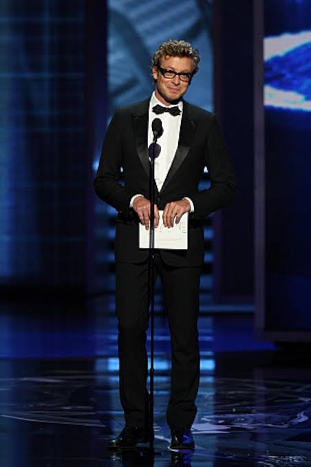

Признание · Отчёт о результатах
Награды и рейтинги
Сериал «Менталист» стал настоящим хитом телеканала CBS.
0 млн+зрителей в первый год
0/10рейтинг на IMDb
0эпизод за 7 сезонов
- Саймон Бейкер получил номинации на премии «Эмми» и «Золотой глобус» за лучшую мужскую роль в драматическом сериале.
- В 2009 году сериал получил премию People's Choice Awards в категории «Любимая новая телевизионная драма».

Саймон Бейкер с номинацией на премию «Эмми»